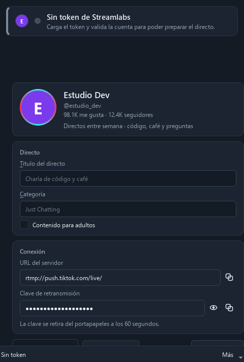
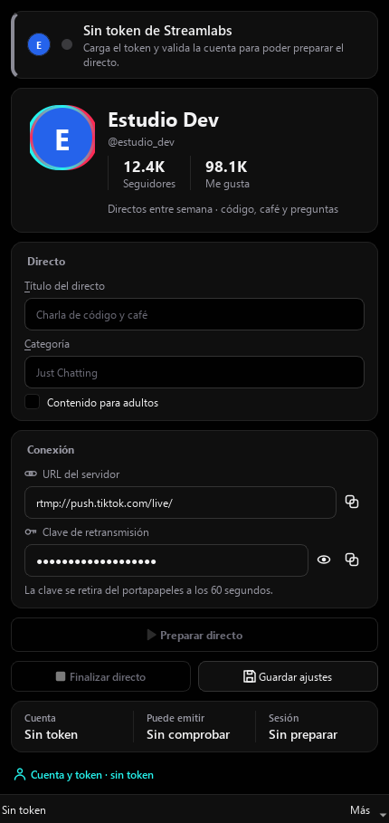
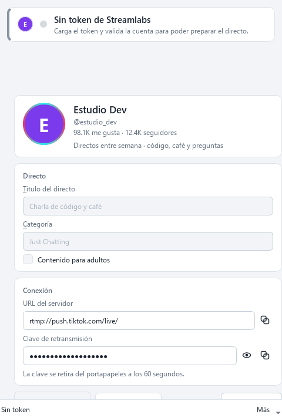
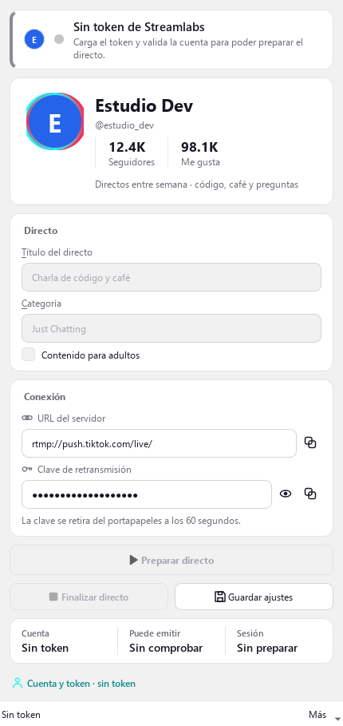
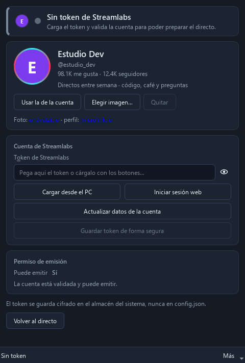
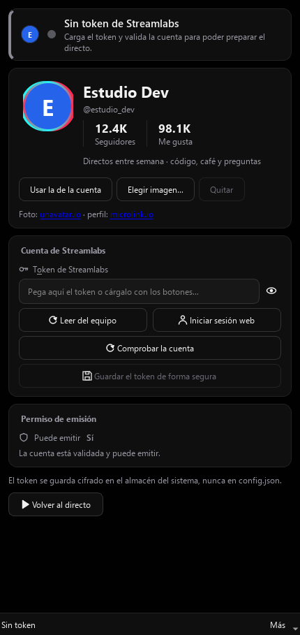
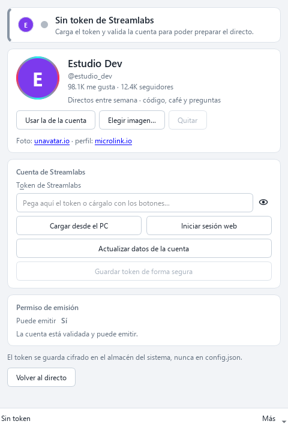
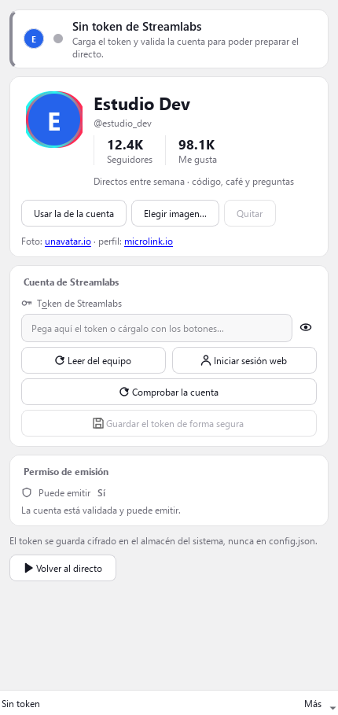

Capturas de la aplicación real, dibujadas por Qt con las fuentes del sistema. No son maquetas: es el mismo código que se ejecuta al abrir el programa.








La ventana es estrecha y alta — 430 × 909, proporción 1:2,1, como un teléfono — y todo va apilado en vertical: banner, perfil, tarjetas, botones y resumen. Sigue siendo redimensionable, con un mínimo de 430 × 360.
Cian #25f4ee y rosa #fe2c55 sobre el negro
#010101. El cian llena el botón principal y el anillo de la foto;
el rosa queda para Finalizar directo, la única acción que tira trabajo
a la basura. Como el blanco sobre ese cian no se lee, los botones llevan texto
negro y los enlaces un cian oscurecido.
Nombre grande y en negrita, el @usuario debajo, y las cifras en
columnas con el rótulo pequeño debajo del número — Seguidores, Me gusta — tal
como las dibuja el perfil. La foto lleva el halo desplazado cian y rosa.
Cada tarjeta es ahora una sección con su título en pequeño y una línea fina debajo, no una caja con una palabra suelta arriba. En oscuro las tarjetas son apenas un punto más claras que el fondo y el borde es un susurro, para que se lean como secciones y no como un formulario. Los campos quedan un escalón por encima, porque un campo que no se ve no se encuentra. El foco ya no engorda el borde —eso hacía saltar el campo un píxel al entrar— sino que cambia de color.
Todos los iconos los dibuja la aplicación (nada de emoji ni de fuentes opcionales, que era el fallo que documenta el repo). Como en un ancho de teléfono tres botones no caben en una fila, Preparar directo ocupa el ancho completo y debajo van Finalizar directo y Guardar ajustes.
La franja Cuenta · Puede emitir · Sesión contesta en la pantalla principal las tres preguntas que antes obligaban a entrar en «Cuenta y token».